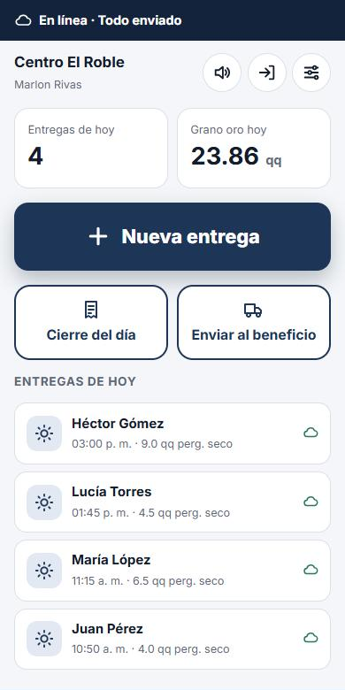
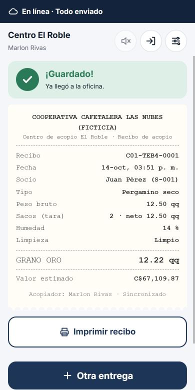

App de campo
Para el acopiador, tan simple como un talonario
Botones grandes, pasos guiados y una voz que explica qué hacer. Pensada para quien nunca ha usado una aplicación.
- Registra socio, peso, sacos, humedad y calidad
- Calcula el grano oro en el momento
- Guarda todo aunque no haya internet
- Imprime o comparte el recibo al socio

